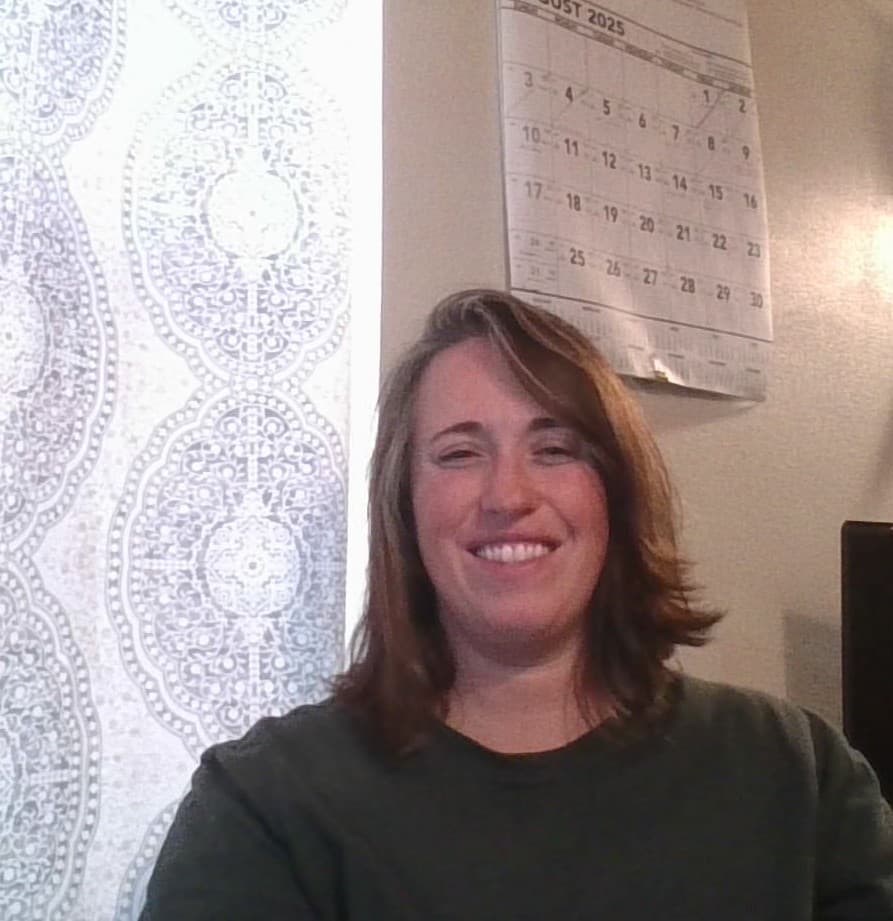

Julean Fabry | WDD 130

Hello, My name is Julean, I live in South-Central Washington. My hobbies tend to change with the seasons, for example. Spring is consumed with garden planning and planting. Summer is hiking, fishing and camping. Fall is harvesting the garden. And winter (which is my favorite season) is reading, cross stitching and cooking. However the one thing I enjoy no matter the season would be music. My favorite memory from this past summer is taking my kids camping and fishing.